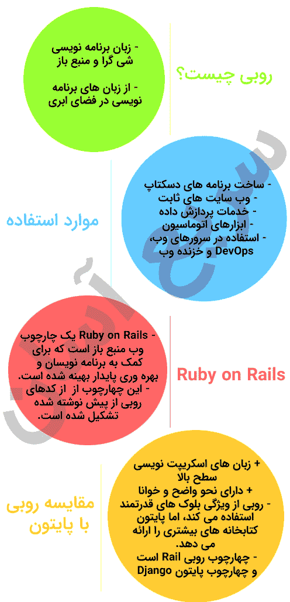

در این مقاله، در مورد اینکه زبان برنامه نویسی Ruby چیست و چرا زبان محبوب بسیاری از توسعه دهندگان در فضای ابری است، صحبت خواهیم کرد و یک نمای کلی درباره تفاوت های Ruby باRuby on Rails و Ruby با Python ارائه خواهیم داد. همچنین در مورد آنچه که Ruby می تواند انجام دهد توضیح می دهیم.
وقتی صحبت از زبان های برنامه نویسی در فضای ابری می شود، گزینه های زیادی برای انتخاب وجود دارد. اما برای توسعه سریع برنامه ها، با کدهای تمیز و قابل فهم، بسیاری از توسعه دهندگان به Ruby روی می آورند.
روبی چیست؟
روبی یک زبان برنامه نویسی شی گرا منبع باز است که در اواسط دهه 90 توسط Yukihiro Matsumoto در ژاپن اختراع شد.
برخلاف زبان هایی مانند C و C++، این زبان برنامه نویسی مستقیماً با سخت افزار صحبت نمی کند بلکه در یک فایل متنی نوشته می شود و سپس توسط یک مفسر تجزیه و به کد تبدیل می شود.
از سوی دیگر، زبانهای شی گرا، تکههایی از کد را به اشیائی تقسیم می کنند که می توانند در صورت نیاز ایجاد و استفاده شوند. می توانید از این اشیاء در قسمت های دیگر برنامه یا حتی برنامه های دیگر استفاده مجدد کنید.
Yukihiro می خواست یک زبان برنامه نویسی ایجاد کند که برای سرعت بخشیدن به توسعه از برنامه نویسی شی گرا و افزایش استفاده مجدد از کد استفاده کند و به این ترتیب زبان برنامه نویسی Ruby با استفاده از زبان و نحو ساده برای مدیریت داده ها و منطق برای حل مشکلات متولد شد. روبی تحت تأثیر Perl، Smalltalk، Eiffel، Ada، Basic و Lisp قرار گرفته است.
اینفوگرافی زبان روبی

از روبی در چه مواردی می توان استفاده کرد؟
زبان برنامه نویسی Ruby یک زبان چند منظوره قابل حمل است که اهداف زیادی را دنبال می کند.
Ruby برای ساخت برنامه های دسکتاپ، وب سایت های ثابت یا استاتیک (يك صفحه وب است كه همانطوري كه نوشته و ذخيره شده است به كاربر تحويل داده مي شود. سایت استاتیک که به آن ايستا نيز گفته مي شود در واقع از نظر ظاهري مانند تمامي وب سايت هاست)، خدمات پردازش داده ها و حتی ابزارهای اتوماسیون عالی است. همچنین در سرورهای وب، DevOps و خزیدن استفاده می شود:
Ruby on Rails
Ruby به تنهایی به عنوان یک زبان برنامه نویسی سطح بالا در نظر گرفته می شود. اما شما واقعاً نمی توانید بدون ذکر Rails در مورد روبی صحبت کنید. این دو آنقدر با هم استفاده شده اند که برای بسیاری شاید تفاوت شان روشن نباشد.
Ruby on Rails چارچوب (فریمورک) قدرتمندی است که Ruby را در کانون توجه قرار داده، محبوبیت آن را افزایش داده و آن را به یک زبان عالی برای ابر تبدیل کرده است.
Ruby on Rails یک چارچوب وب منبع باز است که برای کمک به برنامه نویسان و بهره وری پایدار بهینه شده است.
چارچوب Ruby on Rails از کدهای روبی از پیش نوشته شده برای مواردی مانند ارتباطات، مدیریت فایل، اتصالات پایگاه داده و موارد دیگر تشکیل شده است. یکی از مفاهیم کلیدی Rails، DRY است – Don’t Repeat Yourself (خودتان را تکرار نکنید) – که کلید کارایی چارچوب است.
بیش از یک میلیون وب سایت نوشته شده با Ruby on Rails وجود دارد – طیف گستردهای از سایت های تجاری و سرگرمی پرطرفدار، از جمله GitHub، Twitch، Bloomberg، SoundCloud، Hulu، Square، Basecamp، Airbnb، Hulu، The Weather Channel، Instacart، و توییتر.
Ruby |
Ruby on Rails |
|
|
ماهیت |
زبان | چهارچوب |
| با چه زبانی نوشته شده است؟ | C |
Ruby |
|
چه کاربردی دارد؟ |
برنامه های دسکتاپ، سایت های استاتیک |
برنامه های وب مبتنی بر داده، بازارها |
روبی در مقایسه با پایتون
یکی از زبان هایی که روبی اغلب با آن مقایسه می شود پایتون است. Ruby و Python اشتراکات زیادی دارند و می توانند برای اهداف مشابه بسیاری استفاده شوند. این می تواند تصیم را برای توسعه دهندگانی که قصد دارند یکی از آنها را یاد بگیرند یا برای یک پروژه خاص استفاده کنند، دشوار کند. Ruby و Python هر دو زبان های اسکریپت نویسی سطح بالا، از سمت سرور با نحو واضح و خوانا هستند، اما تفاوت های فنی مهمی بین آنها وجود دارد که نمی توان آنها را نادیده گرفت.
تفاوت های روبی و پایتون
برخی از تفاوت های روبی و پایتون عبارتند از:
- پایتون از چندین IDE پشتیبانی می کند، در حالی که روبی فقط از EclipseIDE پشتیبانی می کند.
- با پایتون شما به چارچوب Django محدود می شوید. با روبی، به Rails محدود هستید.
- روبی از ویژگی بلوک های قدرتمند استفاده می کند، اما پایتون کتابخانه های بیشتری را ارائه می دهد.
- روبی یک زبان شی گرا واقعی است، اما پایتون در میان دانشمندان داده محبوبیت بیشتری دارد.
البته تفاوت های ظریف تری نیز بین آنها وجود دارد.
- برخی از توسعه دهندگان اشکال زدایی Ruby را دشوارتر اما به طور کلی انعطاف پذیرتر می دانند.
- در ابتدا یادگیری پایتون آسان تر به نظر می رسد اما در ادامه اینطور نخواهد بود.
از بسیاری جهات، یک تفاوت اساسی فلسفی بین این دو وجود دارد: در روبی، راه های زیادی برای انجام کارها و راه حل های بسیاری برای حل یک مشکل وجود دارد. در پایتون، تنها یک راه (بهترین راه) برای انجام کارها وجود دارد.
Ruby |
Python |
|
|
چهارچوب |
Rails | Django |
| فلسفه | انجام کارها به روشهای مختلف |
انجام کارها به بهترین روش |
| مزایا | انعطاف پذیری، خلاقیت |
سادگی، ثبات |
چرا باید روبی را یاد بگیریم؟
زبان برنامه نویسی Ruby برای بهره وری و سرگرمی برنامه نویسان طراحی شده است. توسعه دهندگان استفاده از Ruby را ترجیح می دهند زیرا سطح بالا و نحو ساده ای دارد. در این زبان کد کمتری برای نوشتن دارید و می توانید روی یافتن راه حلی برای مشکل خود تمرکز کنید.
سطح بالا و ماهیت انتزاعی Ruby، آن را به زبانی تبدیل می کند که یادگیری و به کارگیری آن آسان است. در حالی که بسیاری از زبان های سطح پایین برای کوچک ترین چیزها به خطوط کد نیاز دارند، با Ruby، می توانید اولین برنامه ابری خود را تنها در چند ساعت بنویسید.
نظرسنجی توسعه دهندگان Stack Overflow در سال 2020،Ruby را چهاردهمین زبان برنامه نویسی محبوب در جهان معرفی کرده است.
همچنین یک انتخاب عالی برای ساخت سریع برنامه ها است و قطعا در توسعه وب برتری قابل ملاحظه ای نسبت به پایتون دارد. با توجه به وجود صدها هزار وب سایت که از روبی استفاده می کنند هیچ جای شکی باقی نمی ماند!